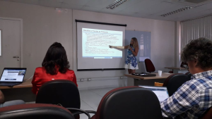

Tecnologias e Soluções para Habilitar o Paradigma de Nuvem das Coisas.
Projeto Cloud of Things
Tecnologias e Soluções para Habilitar o Paradigma de Nuvem das Coisas.
Dados Gerais do Projeto
Professor Responsável: José Neuman de Souza (UFC)
Edital
MCTI/MC/CGI – Projeto de Pesquisa – Temático / Chamada de Propostas (2015)
Tema/Linha do Projeto
TVI – Tecnologias Viabilizadoras da Internet
Vigência
01/10/2017 a 30/09/2022
Habilitando o Paradigma de Nuvem das Coisas
As soluções propostas serão desenvolvidas como um conjunto de serviços,integrados em uma estrutura de software no nível de middleware, construído a partir de uma Arquiteturade Referência (RA) Middleware, serviços e RA concebidos especificamente para ambientes de CoT. Além disso, o projeto tem como objetivo Investigar e propor soluções para suplantar diversos desafios de pesquisa identificados no contexto de Cloud of Things (CoT) visando contribuir para permitir a plena realização desse paradigma.
Frentes de Pesquisa
Desafios e Frentes de Pesquisa do Projeto.
Desafio 1
Desafio 2
Desafio 3
Desafio 4
Desafio 5
Desafio 6
Desafio 1: Virtualização de Dispositivos
Responder a duas principais questões de pesquisa:
Como virtualizar dispositivos (sensores, atuadores e outros objetos físicos) e redes de dispositivos (RASSFs), e
Como separar adequadamente as responsabilidades entre os componentes de uma Nuvem de Dispositivos (considerando as três camadas: de dispositivos, de gateways e da nuvem computacional)
Desafio 2: Alocação de Recursos em Nuvens de dispositivos
Propor soluções para a concepção de dois processos:
Provisionamento de recursos – decidir sobre qual nível da infraestrutura de CoT (físico, borda ou nuvem) e a quantidade/tipo de recursos serão engajados para a criação de VNs para atender as solicitações das aplicações;
Um processo de escalonamento de tarefas para execução nos nós físicos que compõem um nó virtual, lidando com 2 requisitos potencialmente conflitantes: (i) satisfazer QoS das aplicações, (ii) gerar menor consumo dos recursos da infraestrutura CoT.
Desafio 3: Gerenciamento de Grandes Volumes de Dados
Propor mecanismos eficientes e escaláveis para a captura, processamento e armazenamento dos dados gerados pela infra de CoT.
Desafio 4: Segurança em CoT
Desenvolver um mecanismo de verificação de integridade de modo a aprimorar os métodos de verificação de integridade de software aplicáveis a sistemas embarcados de uma forma que seja imune a ataques de pré-processamento e também de replicação de código, bem como possa ser aplicado a diferentes plataformas de execução.
Desafio 5: Arquitetura de Referência para CoT
Para que os resultados das pesquisas derivadas dos desafios 1 a 4 sejam utilizados de forma efetiva na criação e no gerenciamento de sistemas de CoT, faz-se necessária a construção de um arcabouço de software provendo diversos tipos de funcionalidades para os vários componentes desses sistemas, e que forneça uma abstração única para uso pelos diversos tipos de stakeholders envolvidos.
Esse arcabouço será organizado como uma plataforma de middleware que proverá um conjunto de serviços e uma interface padrão para acesso ao sistema. Tal plataforma de middleware será baseada em uma Arquitetura de Referência (AR).
Desafio 6: Construção de aplicações para CoT
Criar um ambiente orientado por arquitetura para o desenvolvimento de aplicações para CoT. O ambiente será formado por dois níveis:
Arquitetural, composto por uma linguagem de descrição de arquiteturas (ADL), com suporte a descrição estrutural, comportamental e de execução da arquitetura;
Nível da plataforma de IoT, composto pelo arcabouço de software para dar suporte a nuvem de dispositivos que será construído no projeto
Portfólio
Publicações e Softwares Desenvolvidos

Frente 1: Virtualização de Dispositivos
Igor Leão dos Santos, Luci Pirmez, Flávia Coimbra Delicato, Gabriel Martins de Oliveira Costa, Claudio M. de Farias, Samee U. Khan, Albert Y. Zomaya: Zeus: A resource allocation algorithm for the cloud of sensors. Future Generation Comp. Syst. 92: 564-581 (2019). Disponível aqui.
Igor L. dos Santos, Marcelo P. Alves, Flavia C. Delicato, Paulo F. Pires, Luci Pirmez, Wei Li, Albert Y. Zomaya, Samee U. Khan. A System Architecture for Cloud of Sensors. IEEE DASC 2018. Disponível aqui.
Igor L. dos Santos, Marcelo P. Alves, Flavia C. Delicato, Paulo F. Pires, Luci Pirmez, Wei Li, Albert Y. Zomaya, Samee U. Khan. A System Architecture for Cloud of Sensors. IEEE DASC 2018. Disponível aqui.
Algoritmo de alocação de recursos. Disponível aqui.
Simulador YAFS estendido para executar avaliação do algoritmo. Disponível aqui.
Tiago C. S. Xavier, Flávia Coimbra Delicato, Paulo F. Pires, Cláudio L. Amorim, Wei Li, Albert Y. Zomaya: Managing Heterogeneous and Time-Sensitive IoT Applications through Collaborative and Energy-Aware Resource Allocation. ACM Trans. Internet Things 3(2): 10:1-10:28 (2022). Disponível aqui.
Aluizio Rocha Neto, Thiago Pereira da Silva, Thaís Vasconcelos Batista, Frederico Lopes, Flávia Coimbra Delicato, Paulo F. Pires: Optimizing Resource Allocation in Edge-distributed Stream Processing. WEBIST 2021: 156-166. Disponível aqui.
Frente 3: Gerenciamento de Grandes Volumes de Dados
da Costa Bezerra, S.F.; Filho, A.S.M.; Delicato, F.C.; da Rocha, A.R. Processing Complex Events in Fog-Based Internet of Things Systems for Smart Agriculture. Sensors 2021, 21, 7226. Disponível aqui.
Gabriel Martins de Oliveira Costa, Sergio Guedes de Souza, Igor Leão dos Santos, Luci Pirmez, Claudio M. de Farias: On a multisensor knowledge fusion heuristic for the Internet of Things. Comput. Commun. 176: 190-206 (2021). Disponível aqui.
Gabriel Martins de Oliveira Costa, Luis Filipe Kopp, Gabriel Rodrigues Caldas de Aquino, Luiz Fernando Rust da Costa Carmo, Claudio Miceli de Farias: A multisensor prediction-based heuristic for the internet of things. Computing 103(6): 1105-1120 (2021). Disponível aqui.
Fabiano P. Martins, João A. R. Paixão, Claudio M. de Farias, Flávia Coimbra Delicato: Hercules: A context-aware multiple application and multisensor data fusion algorithm. DASC/PiCom/CBDCom/CyberSciTech 2021: 197-200. Disponível aqui.
Frente 4: Segurança em CoT
E. L. C. Macedo, F. C. Delicato, L. F. M. de Moraes and G. Fortino, "Assigning Trust to Devices in the Context of Consumer IoT Applications," in IEEE Consumer Electronics Magazine. Disponível aqui
Macedo, E.; Delicato, F.; Moraes, L. and Fortino, G. (2022). A Two-level Integrated Approach for Assigning Trust Metrics to Internet of Things Devices. In Proceedings of the 7th International Conference on Internet of Things, Big Data and Security - IoTBDS, ISBN 978-989-758-564-7; ISSN 2184-4976, pages 26-36. (Best Student Paper) Disponível aqui
FOTIA, L.; Delicato, Flávia C. ; FORTINO, G. . Integrating Blockchain and Edge Computing in Internet of Things: Brief Review and Open Issues. In: 2021 International Conference on Cyber-physical Social Intelligence, 2021, Virtual. Proceedings of the 2021 International Conference on Cyber-physical Social Intelligence, 2021. Disponível aqui
Sávyo V. Morais, Alan Oliveira de Sá, Luiz Fernando Rust da Costa Carmo, Claudio M. de Farias: Malicious Traffic Description: Toward a Data Model for Mitigating Security Threats to Home IoT. IEEE Commun. Stand. Mag. 5(3): 48-55 (2021). Disponível aqui.
Alvaro E. R. Rincón, Wilson S. Melo, Claudio Miceli de Farias, Luiz Fernando Rust da Costa Carmo: Securing Smart Meters Through Physical Properties of Their Components. IEEE Trans. Instrum. Meas. 70: 1-11 (2021). Disponível aqui .
Frente 5: Arquitetura de Referência para CoT
T. P. da Silva, A. F. R. Neto, T. V. Batista, F. A. S. Lopes, F. C. Delicato and P. F. Pires, “Horizontal Auto-Scaling in Edge Computing Environment using Online Machine Learning,” 2021 IEEE Intl Conf on Dependable, Autonomic and Secure Computing, Intl Conf on Pervasive Intelligence and Computing, Intl Conf on Cloud and Big Data Computing, Intl Conf on Cyber Science and Technology Congress (DASC/PiCom/CBDCom/CyberSciTech), 2021, pp. 161-168, doi: 10.1109/DASC-PICom-CBDCom-CyberSciTech52372.2021.00038. Disponível aqui
Algoritmo de Predição usado na abordagem Auto-Scaling. Disponível aqui.
Dias, D.; Delicato, F.; Pires, P.; Rocha, A.; Nakagawa, E. Y.; An Overview of Reference Architectures for Cloud of Things. In: 35th ACM/SIGAPP Symposium on Applied Computing (ACM SAC 2020), 2020, p. 1498-1504.. Disponível aqui.
Nakagawa, E. Y.; Antonino, P.; Schnicke, F.; Kuhn, T.; Liggesmeyer, P.; Continuous Systems and Software Engineering for Industry 4.0: A Disruptive View, Information and Software Technology, V. 135, 2021, p. 106562. Disponível aqui.
Nakagawa, E. Y.; Antonino, P.; Schnicke, F.; Capilla, R.; Kuhn, T.; Liggesmeyer, P.; Industry 4.0 Reference Architectures: State of the Art and Future Trends, Computers & Industrial Engineering, V. 156, 2021, p. 1-37. Disponível aqui.
Allian, A. P.; Schnicke, F.; Antonino, P.O.; Rombach, D.; Nakagawa, E. Y.; Architecture Drivers for Trustworthy Interoperability in Industry 4.0, IEEE Systems Journal, 2021, p. 1-9. Disponível aqui.
Garcés, L.; Martínez-Fernández, S.; Oliveira, L.; Valle, P.; Ayala, C.; Franch, X.; Nakagawa, E.Y.; Three Decades of Software Reference Architectures: A Systematic Mapping Study, Journal of Systems and Software, V. 179, 2021, p. 1-23. Disponível aqui.
Valle, P.; Garcés, L.; Volpato, T.; Martínez-Fernández, S.; Nakagawa, E.Y.; Towards Suitable Description of Reference Architectures, PeerJ Computer Science, V. 7, 2021, p. e392-e424. Disponível aqui.
Silva, Rafael de Amorim ; Braga, Rosana Teresinha Vaccare . Simulating Systems-of-Systems With Agent-Based Modeling: A Systematic Literature Review. IEEE Systems Journal, v. 14, p. 3609-3617, 2020. Disponível aqui.
Silva, Rafael de Amorim ; BRAGA, ROSANA T.V. . Enhancing Future Classroom Environments based on Systems of Systems and the Internet of Anything. IEEE Internet of Things Journal, v. 7, p. 10475-10482, 2020. Disponível aqui.
SILVA, H. A. ; ADRIANO, E. ; SCATOLINI, D. ; BRAGA, ROSANA T.V. . Supporting IoT-based applications to combat the Aedes aegypti mosquito: a case in Brazil. In: 34th IEEE International Symposium on Computer-Based Medical Systems, 2021, online event. IEEE CBMS 2021 Proceedings, 2021. v. 1. p. 1-6. Disponível aqui.
VARGAS, IOHAN GONCALVES ; NASCIMENTO, DIEGO DE LIMA ; BRAGA, ROSANA T. VACCARE . Fostering Reuse by Integration: A Directed System of Systems Development Case. In: 2020 IEEE International Conference on Software Architecture Companion (ICSAC), 2020, Salvador. 2020 IEEE International Conference on Software Architecture Companion (ICSA-C), 2020. v. 1. p. 242-249. Disponível aqui.
Frente 6: Construção de Aplicações para CoT
BNS Framework, pacote para simulação de WBANs, redes de sensores corporais sem fio. Disponível aqui.
Thiago Pereira da Silva, Thais Batista, Frederico Lopes, Aluizio Rocha Neto, Flávia C. Delicato, Paulo F. Pires, and Atslands R. da Rocha. 2021. Fog Computing Platforms for Smart City Applications - A Survey. ACM Trans. Internet Technol. Disponível aqui.
CABALLERO, EGBERTO ; FERREIRA, V. C. ; LIMA, R. A. ; SOTO, J. C. H. ; MUCHALUAT-SAADE, D. C. ; ALBUQUERQUE, C. BNS: A Framework for Wireless Body Area Network Realistic Simulations. SENSORS, v. 21, p. 5504, 2021. Disponível aqui.
CABALLERO, E. ; FERREIRA, V. C. ; LIMA, R. A. ; ALBUQUERQUE, C. ; MUCHALUAT-SAADE, D.C. LATOR: Protocolo de Roteamento Ciente de Qualidade com Prevenção de Aquecimento para Redes Corporais sem Fio. In: Simpósio Brasileiro de Redes de Computadores e Sistemas Distribuídos, 2020, Rio de Janeiro. SBRC 2020. Disponível aqui.